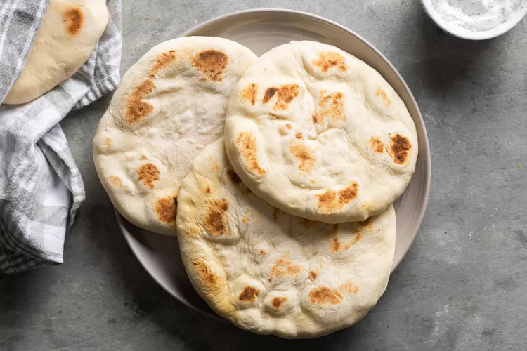

Roti Recipe

Description
Sada roti is a type of Indian-influenced flatbread that is found throughout the Caribbean and most often associated with Trinidad and Tobago. Also found in Jamaica, and Guyana and Surinam in South America, they are usually eaten with stews and similar preparations in which the bread helps soak up the sauce or bring juicy pieces of food to the mouth.
Ingrediants
- 3 cups all-purpose flour
- 3 teaspoons baking powder
- 1 teaspoon salt
- 1 teaspoon granulated sugar
- 1 and a 1/2 tablespoons vegetable oil, or canola oil, or ghee, divided
- 1 and a 1/4 cups lukewarm water
Steps
- Gather the ingredients.
- In a large bowl, thoroughly mix the flour, baking powder, salt, and sugar.
- Add 1 tablespoon of oil, or ghee if using, and mix it into the flour.
- Add just enough water to knead and make a dough. Start with 3/4 cup of water and knead the dough, adding a little bit more water at a time if you deem it necessary. Not all flours are alike, and not all doughs need the same amounts of water. The dough needs to be soft and pliable, and you'll get that after a few minutes of kneading, between 4 and 8.
- Form a ball with the dough and rub some of the remaining oil on top to prevent the dough from forming a skin. Cover and let rest for 30 minutes
- Heat a cast iron griddle, pan, or tawah if you have one, over medium heat.
- Cut the dough into 4 equal pieces. Cover the rest of the dough as you work with one piece at a time.
- Lightly flour your work surface and rolling pin.
- Form one piece of the dough into a ball, then flatten it into a disk. Roll it out into a 5-inch circle of about 1/4 inch thickness.
- Transfer the dough disc to the heated griddle or pan and lower the heat to medium-low. Let cook on one side until the roti puffs up.
- Flip the roti and cook the other side for 1 or 2 minutes. Remove roti from the pan and wrap loosely in a clean kitchen towel, or any flour-bag type of fabric.
- Repeat the process with the remaining pieces of dough. Serve warm.